Мастер отчетов – это раздел программы, в котором можно построить различные отчеты в разрезе товаров, денежных средств, сотрудников и других объектов. Мастер отчетов доступен из меню главной формы: Отчеты – Мастер отчетов.
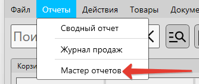
Информация
Доступ для просмотра сводного отчета регулируется правами доступа
Видео-урок
Внешний вид мастера отчетов
Мастер отчетов состоит из двух страниц. Первая страница – это раздел выбора типа отчета. Она показана на скриншоте ниже. Для построения определенного отчета – выберите его и нажмите "Далее".
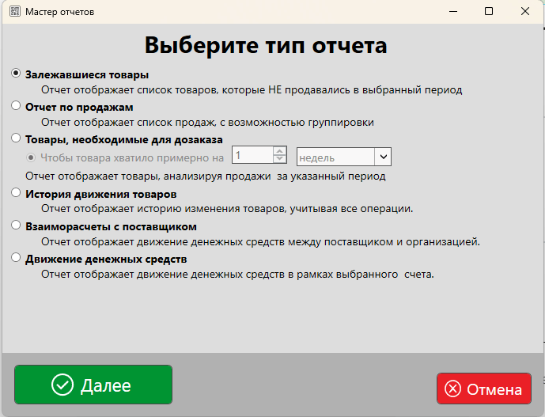
Вторая страница – это параметры отчета. Набор параметров может зависеть от типа формируемого отчета. Пример страницы параметров отчета показан ниже.
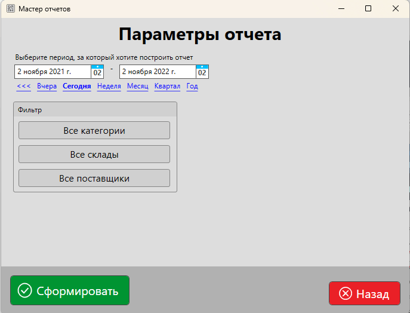
Вы можете выбрать период, за который будут анализироваться данные, категории товаров, склады, поставщиков и другие параметры, которые для каждого типа отчета могут отличаться.
Шаблоны отчетов
Все отчеты, доступные в мастере, формируются на базе шаблонов, аналогичных шаблонам документов. Их так же можно добавлять, удалять или изменять под собственные нужды.
Для некоторых типов отчетов доступно несколько вариантов шаблонов, позволяющих получить данные в разрезе различных параметров.
Например, для "Отчет по продажам" можно сформировать отчет на базе нескольких шаблонов.
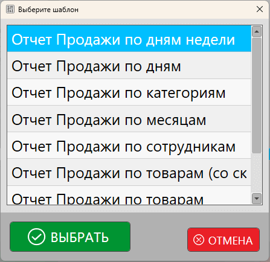
На скриншоте выше показан выбор шаблонов. Набор стандартных шаблонов зависит от типа отчета.
Полезные материалы
Доступные типы отчетов
В мастере отчетов доступно несколько типов отчетов, которые позволяют получить определенную информацию из базы данных.
Залежавшиеся товары
Такой отчет позволяет получить список тех товаров, которые НЕ продавались за определенный период.
На скриншоте ниже показан отчет по категории "Батарейки" за последний год. В списке 4 позиции, которые в течение года НЕ продавались.
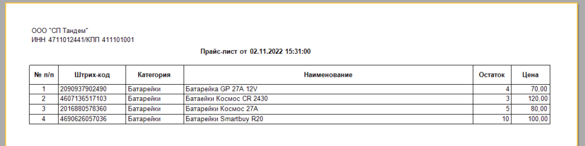
Отчет по продажам
Отчет по продажам формирует данные на основании истории продаж. Для этого отчета доступно несколько стандартных шаблонов.
Отчет "Продажи по дням недели"
Этот шаблон группирует список продаж по дням недели. Таким образом можно определить, в какой из дней недели продажи более активные. Пример такого отчета на скриншоте ниже.
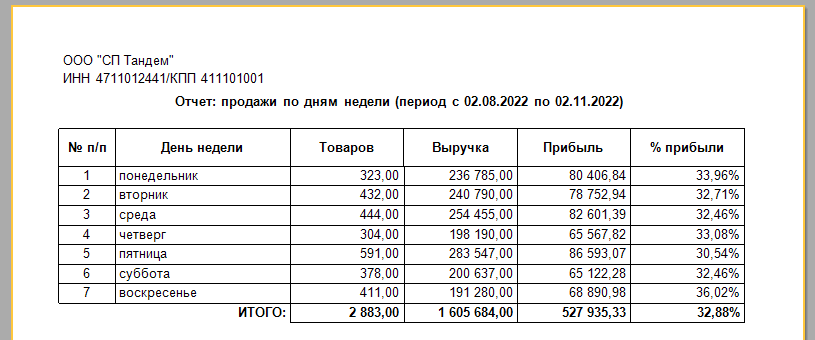
Отчет "Продажи по дням"
В этом шаблоне данные группируются по дням. Например, можно посмотреть, какой из дней был более прибыльным за последнюю неделю.
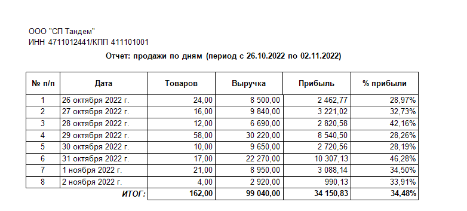
Отчет "Продажи по категориям"
Продажи по категориям позволяют увидеть выручку и прибыль, сгруппированные по категориям товаров.
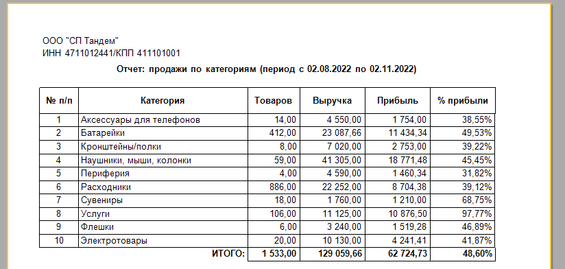
Отчет "Продажи по месяцам"
Продажи, сгруппированные по месяцам, позволяют проанализировать оборот и прибыль в разрезе месяцев. Построив отчет за последний год можно увидеть, какой из месяцев был самым прибыльным.
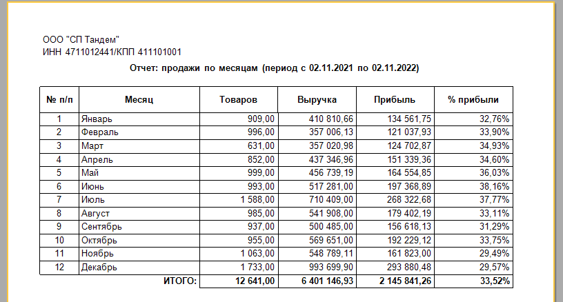
Отчет "Продажи по сотрудникам"
Данный шаблон позволяет сгруппировать продажи по сотрудникам. Таким образом можно выявить, кто из сотрудников приносит больше прибыли организации.
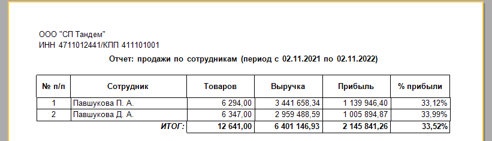
Полезные материалы
Отчет "Продажи по товарам"
Продажи по товарам отображают информацию в разрезе товаров. Т.е. можно увидеть данные о том, какие товары лучше (или хуже) продаются и приносят ли прибыль.
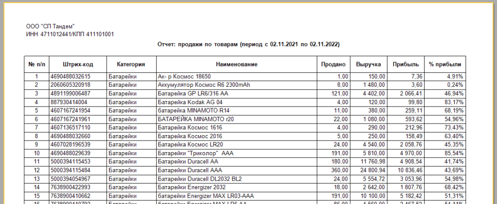
Отчет "Продажи по часам"
Группированные по часам продажи позволяют определить, имеет ли смысл работать торговой точке в определенные часы.
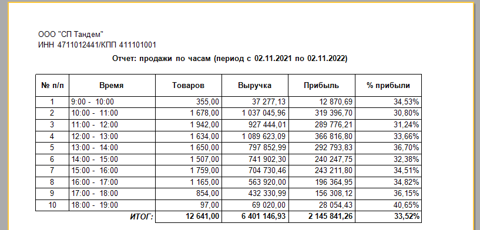
Товары, необходимые для дозаказа
Такой отчет анализирует продажи за предыдущий период, текущие остатки и формирует данные, на основании которых можно сделать дозаказ товаров.
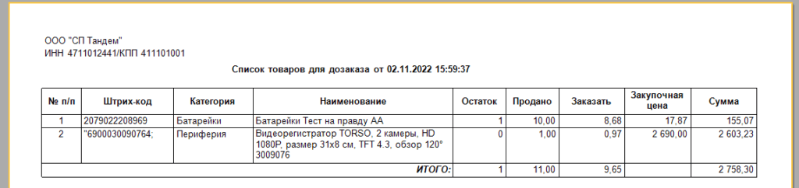
История движения товаров
История движения товаров отображает информацию о движении товарных остатков.
Остаток товаров на определенную дату
Этот шаблон отображает остатки на текущий момент, начало и конец выбранного периода.
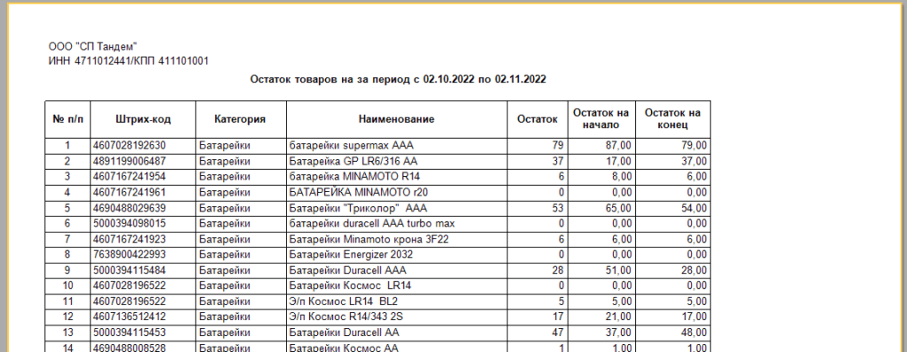
Отчет о движении товарно-материальных ценностей (МХ-20)
Данный шаблон построен на базе унифицированной формы МХ-20: отчет о движении товарно-материальных ценностей в местах хранения. В отчете отображается информация об остатке на начало периода, приход, расход и остаток на конец выбранного периода.
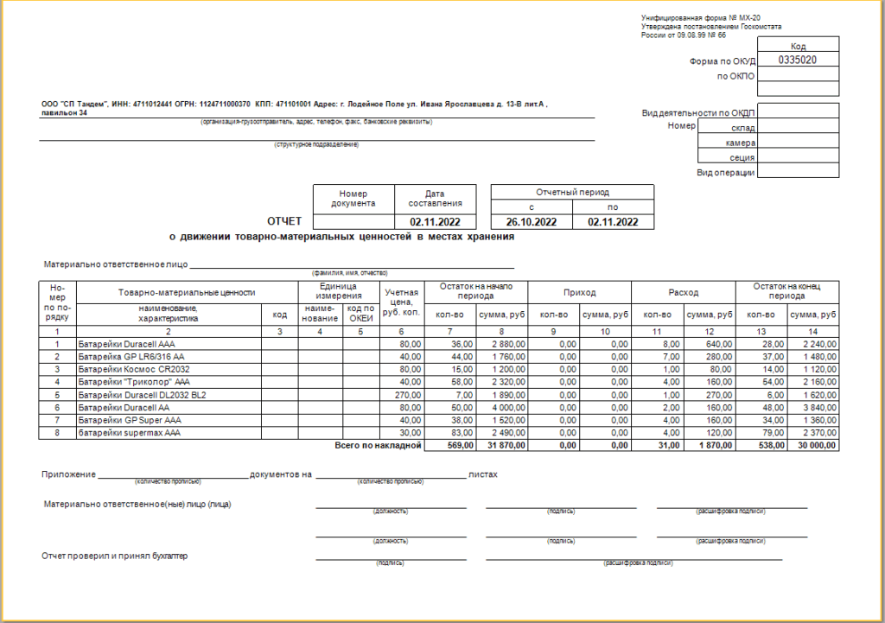
Взаиморасчеты с поставщиком
Данный тип отчетов позволяет получать информацию о взаиморасчетах с поставщиками.
Полезные материалы
Акт сверки взаимных расчетов (краткий)
Шаблон для построения отчета "Акт сверки" в кратком виде.
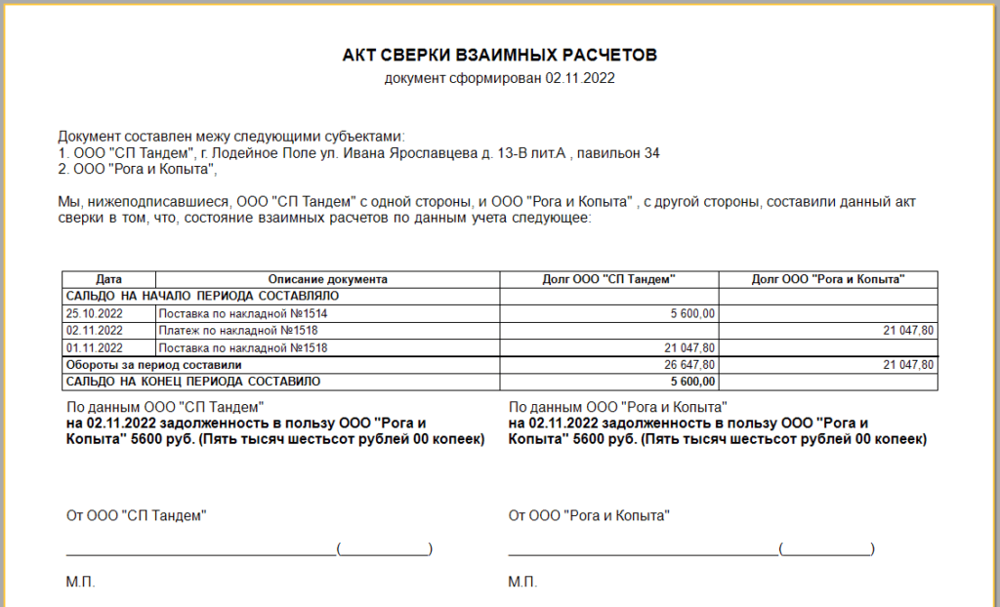
Акт сверки взаимных расчетов (подробный)
Подробный отчет по взаиморасчетам с поставщиком.
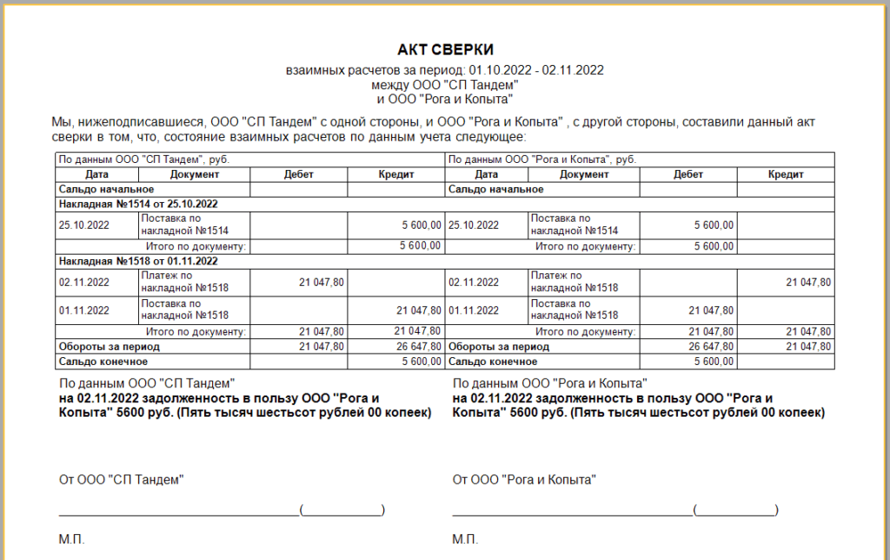
Движение денежных средств
Краткий отчет о движении денежных средств между организацией и поставщиком.
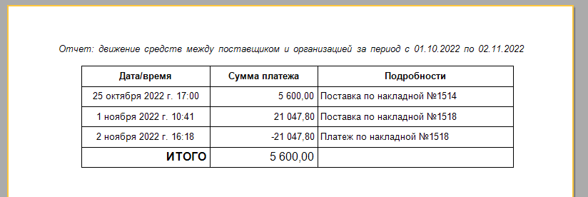
Движение денежных средств
Отчет позволяет получить данные о движении денежных средств на счетах за выбранный период.
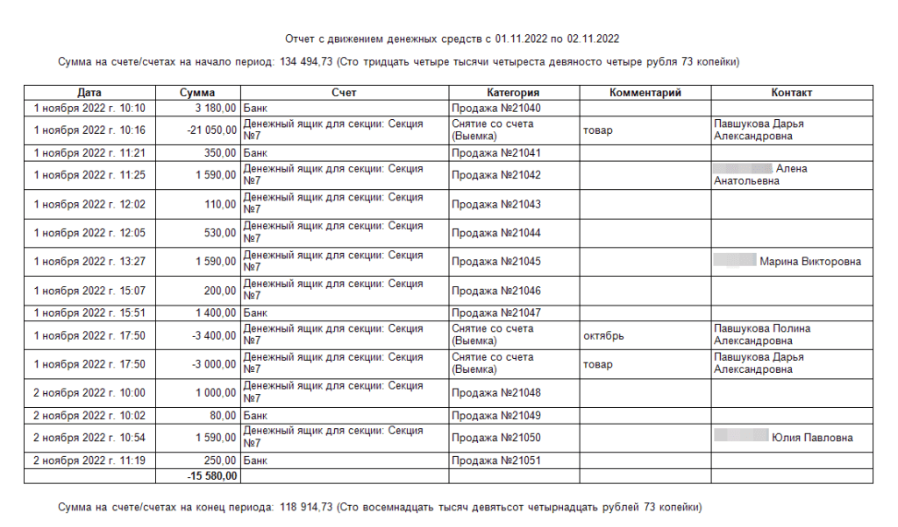
Сохранение результатов отчетов
Сформированный отчет может быть распечатан или сохранен в удобном формате для использования в будущем. В предварительном просмотре результатов выберите необходимый пункт.
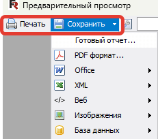